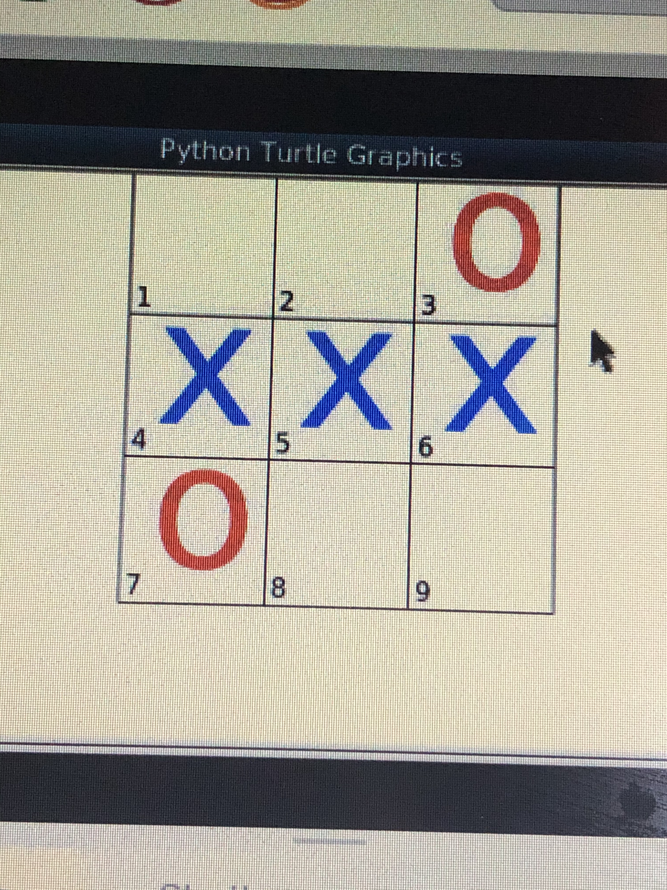
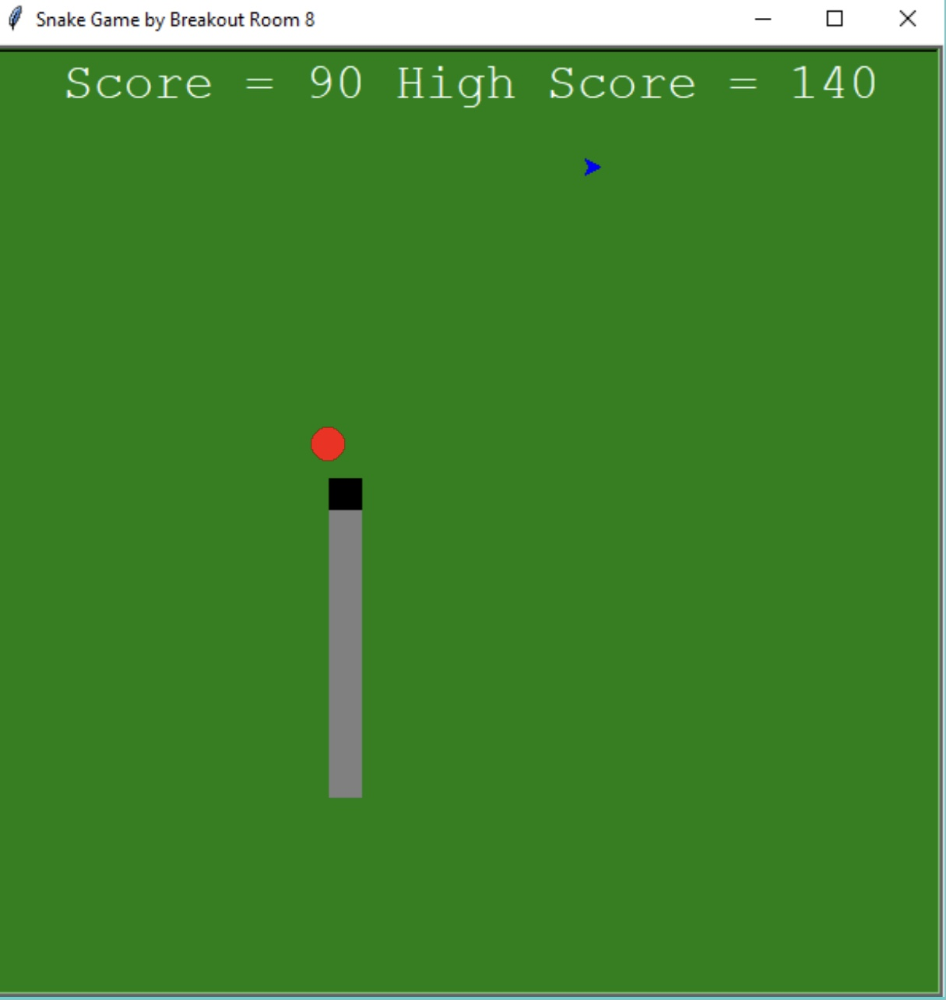

Home
Portfolio
About Me
my portfolio

this is our 1.1.9 project!
As you can see, this is a portion of code from our 1.1.9 project called pizza maker. Essentially, if you press a certain key associated with a pizza topping (for ex. n for onions) then it will appear wherever the cursor is on the pizza. This project was super fun.
this is our 1.2.5 project!

This is a tik tac toe multiplayer interactive game. Basically the players choose which square to place an 'X' or 'O' at by putting a number into the game console that correlates with said square. As you can see, player 1 who was X won. This was a simple code for a simple, traditional game. I loved this project!
this is our 1.3.1 project!

My group decided to do a single player snake game for this project, where the main objective of the game is to have the snake grow by eating food and avoiding obstacles. If the snake hits an obstacle, the game ends and starts over, and this includes its own tail. I enjoyed coding this!